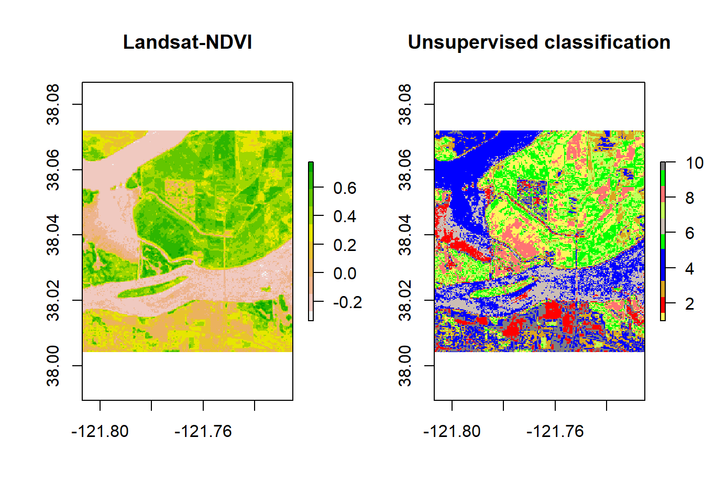

Chapter 4 Clustering
For this example, we will follow the National Land Cover Database 2011 (NLCD 2011) classification scheme for a subset of the Central Valley regions. We use cloud-free composite image from Landsat 5 with 6 bands
landsat5 <- stack('data/rs/centralvalley-2011LT5.tif')
names(landsat5) <- c('blue', 'green', 'red', 'NIR', 'SWIR1', 'SWIR2')We will use the k-means algorithm to group pixels with similar spectral characteristics. We perform the unsupervised clsutering on a subset of the ndvi layer.
# first we compute the ndvi layer
ndvi <- (landsat5[['NIR']] - landsat5[['red']]) / (landsat5[['NIR']] + landsat5[['red']])Then we get raster values from a spatial subset of the ndvi layer
# Extent to crop ndvi layer
e <- extent(-121.807, -121.725, 38.004, 38.072)
# crop landsat by the extent
ndvi <- crop(ndvi, e)
ndvi## class : RasterLayer
## dimensions : 252, 304, 76608 (nrow, ncol, ncell)
## resolution : 0.0002694946, 0.0002694946 (x, y)
## extent : -121.807, -121.725, 38.00413, 38.07204 (xmin, xmax, ymin, ymax)
## crs : +proj=longlat +datum=WGS84 +no_defs +ellps=WGS84 +towgs84=0,0,0
## source : memory
## names : layer
## values : -0.3360085, 0.7756007 (min, max)## num [1:76608] 0.245 0.236 0.272 0.277 0.277 ...Now we perform the kmeans clustering on the matrix and inspect the output
# It is important to set the seed generator because `kmeans` initiates the centers in random locations
set.seed(99)
# We want to create 10 clusters, allow 500 iterations, start with 5 random sets using "Lloyd" method
kmncluster <- kmeans(na.omit(nr), centers = 10, iter.max = 500, nstart = 5, algorithm="Lloyd")
# kmeans returns an object of class "kmeans"
str(kmncluster)## List of 9
## $ cluster : int [1:76608] 4 4 3 3 3 3 3 4 4 4 ...
## $ centers : num [1:10, 1] 0.55425 0.00498 0.29997 0.20892 -0.20902 ...
## ..- attr(*, "dimnames")=List of 2
## .. ..$ : chr [1:10] "1" "2" "3" "4" ...
## .. ..$ : NULL
## $ totss : num 6459
## $ withinss : num [1:10] 5.69 6.13 4.91 4.9 5.75 ...
## $ tot.withinss: num 55.8
## $ betweenss : num 6403
## $ size : int [1:10] 8932 4550 7156 6807 11672 8624 8736 5040 9893 5198
## $ iter : int 108
## $ ifault : NULL
## - attr(*, "class")= chr "kmeans"Kmeans returns an object of 9 elements. The cell values of kmncluster$cluster range between 1 to 10 corresponding to the input number of cluster we provided. It indicates the cluster label for corresponding pixel. We need to convert theses labels to RasterLayer of the same dimension of the ndvi.
# Use the ndvi object to set the cluster values to a new raster
knr <- setValues(ndvi, kmncluster$cluster)
knr## class : RasterLayer
## dimensions : 252, 304, 76608 (nrow, ncol, ncell)
## resolution : 0.0002694946, 0.0002694946 (x, y)
## extent : -121.807, -121.725, 38.00413, 38.07204 (xmin, xmax, ymin, ymax)
## crs : +proj=longlat +datum=WGS84 +no_defs +ellps=WGS84 +towgs84=0,0,0
## source : memory
## names : layer
## values : 1, 10 (min, max)The resulting knr Ratsrer layer contains pixels with their corresponding cluster labels. We will plor the clustering raster layer with the original raster image side by side in order to recognize the land cover classes for each cluster.
# Use the ndvi object to set the cluster values to a new raster
# Define a color vector for 10 clusters (learn more about setting the color later)
mycolor <- c("#fef65b","#ff0000", "#daa520","#0000ff","#0000ff","#00ff00","#cbbeb5",
"#c3ff5b", "#ff7373", "#00ff00", "#808080")
par(mfrow = c(1,2))
plot(ndvi, col = rev(terrain.colors(10)), main = 'Landsat-NDVI')
plot(knr, main = 'Unsupervised classification', col = mycolor )